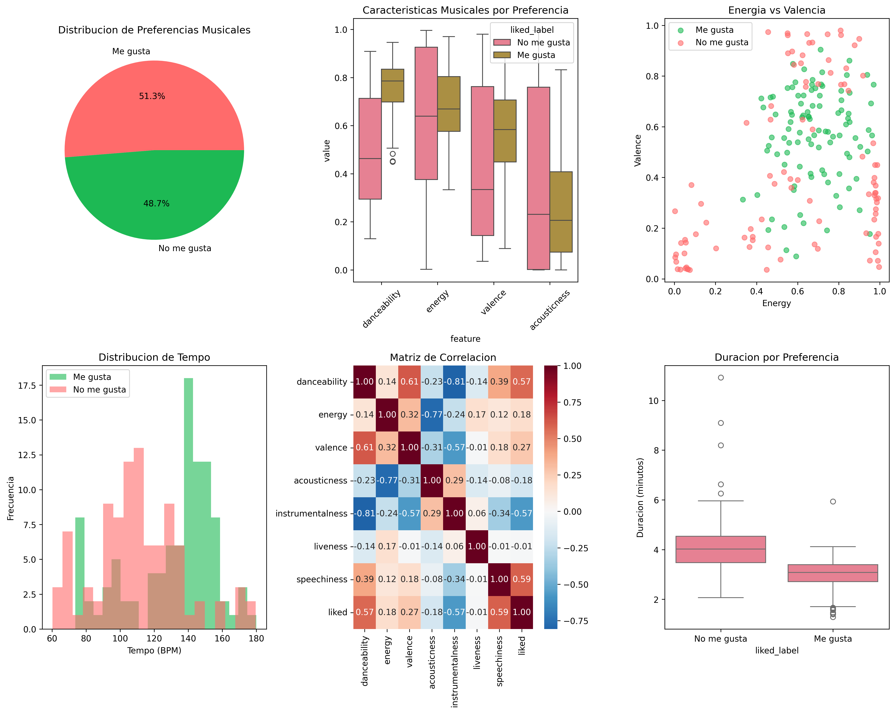

📊 Resumen del Dataset
Este análisis examina 195 canciones con 14 características musicales diferentes, evaluando mis preferencias personales para identificar patrones en mi gusto musical.
🎼 Características Musicales por Preferencia
■ Verde: Me gusta ■ Rojo: No me gusta
📈 Visualizaciones del Análisis
Gráficos generados automáticamente mostrando distribuciones, correlaciones y patrones en las características musicales.
🧠 Insights Principales
✅ Características que MÁS me gustan:
- Danceability (+0.246): Prefiero canciones muy bailables
- Valence (+0.144): Me inclino hacia música más positiva y alegre
- Speechiness (+0.142): Disfruto canciones con elementos vocales prominentes
❌ Características que MENOS me gustan:
- Instrumentalness (-0.393): Prefiero canciones con vocales sobre instrumentales
- Acousticness (-0.115): Me inclino más hacia música producida que acústica
⏰ Preferencias de Tempo y Duración
Prefiero canciones más rápidas (131 BPM vs 110 BPM) y más cortas (3 min vs 4 min), lo que sugiere una preferencia por música más dinámica y concisa.
🎯 Mi Perfil Musical
🔬 Metodología y Herramientas
Dataset: 195 canciones con 14 características musicales de Spotify API
Tecnologías: Python, Pandas, NumPy, Matplotlib, Seaborn
Análisis: Estadística descriptiva, análisis de correlación, visualización de datos
Insights: Identificación de patrones en preferencias musicales personales